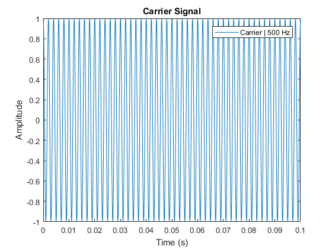
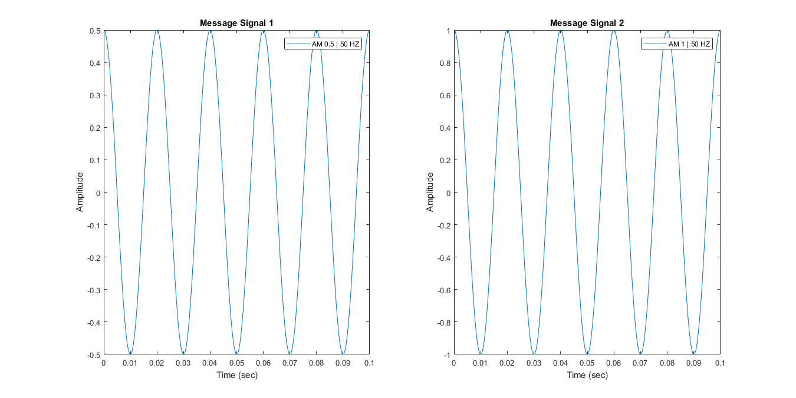
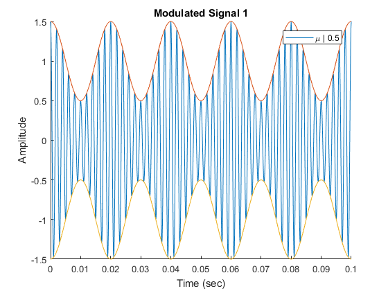
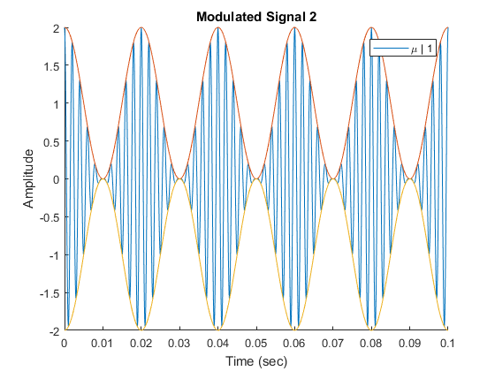

clear; close all; clc;
AM = [0.50,1];
AC = 1;
mu = AM./AC;
freqM = 50;
wcM = 2*pi*freqM;
freqC = 10*freqM;
wcC = 2*pi*freqC;
fs = 10000;
time = 0: 1/fs : 0.10;
carr = AC*cos(wcC*time);
figure();
plot(time,carr);
xlabel('Time (s)');
ylabel('Amplitude');
title('Carrier Signal');
cString = sprintf('Carrier | %g Hz', freqC);
legend(cString);
figure('units','normalized','outerposition',[0 0 1 1])
messSig = zeros(length(AM), length(time));
messSigPha = zeros(length(AM), length(time));
for j = 1: length(AM)
subplot(1,length(AM),j)
messSig(j,:) = AM(j).*cos(wcM.*time);
messSigPha(j,:) = AM(j).*cos((wcM.*time) - (pi));
plot(time,messSig(j,:));
xlabel('Time (sec)');
ylabel('Amplitude');
tString1 = sprintf('Message Signal %g',j);
title(tString1);
lString1 = sprintf('AM %g | %g HZ', AM(j), freqM);
legend(lString1);
end
modSig = zeros(length(AM), length(time));
for j = 1: length(AM)
figure()
modSig(j,:) = (AC + AM(j).*cos(wcM.*time)).*cos(wcC*time);
hold on;
plot(time,modSig(j,:));
plot(time,(messSig(j,:) + AC), time, (messSigPha(j,:) - AC));
xlabel('Time (sec)');
ylabel('Amplitude');
tString2 = sprintf('Modulated Signal %g',j);
title(tString2);
lString2 = sprintf('\\mu | %g', mu(j));
legend(lString2);
end
   